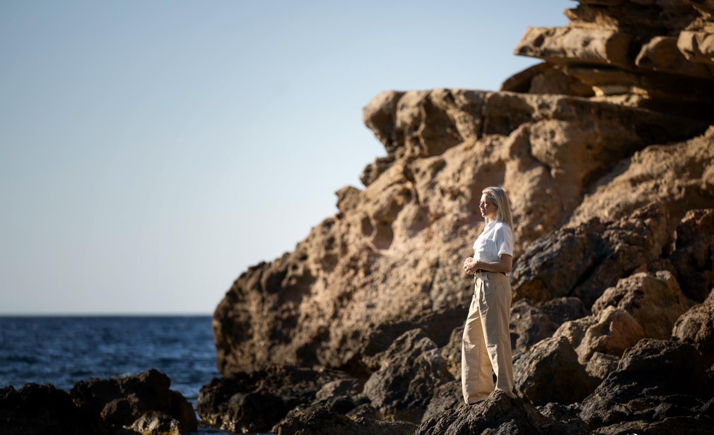
Sparkle
Your Life
Meer rust. Meer ruimte. Meer jezelf.
Soms weet je dat het tijd is voor verandering. Niet omdat er iets mis is. Maar omdat je verlangt naar meer rust in je hoofd, meer ruimte in je leven en meer verbinding met jezelf.
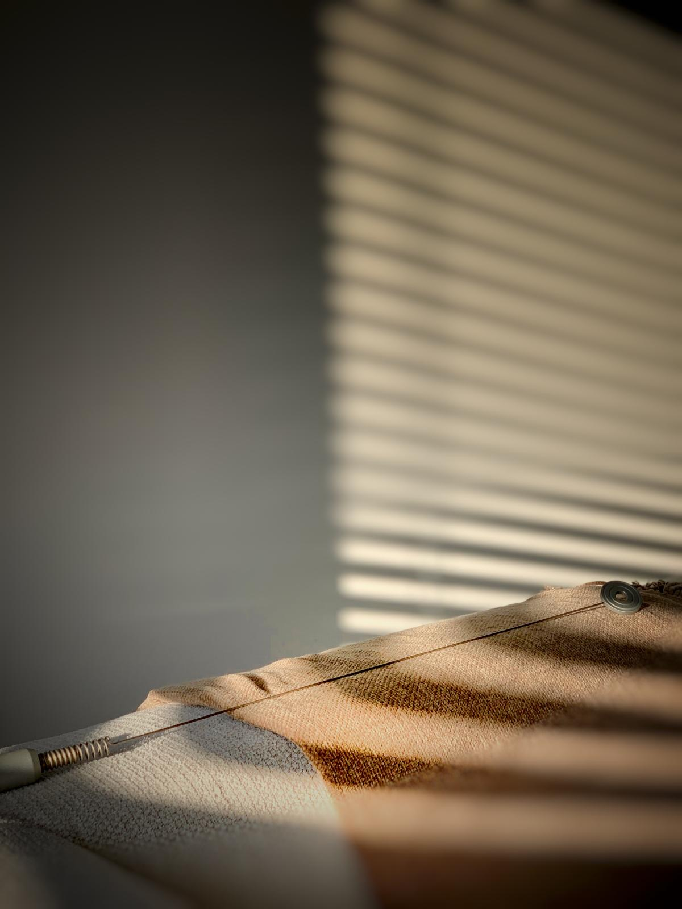
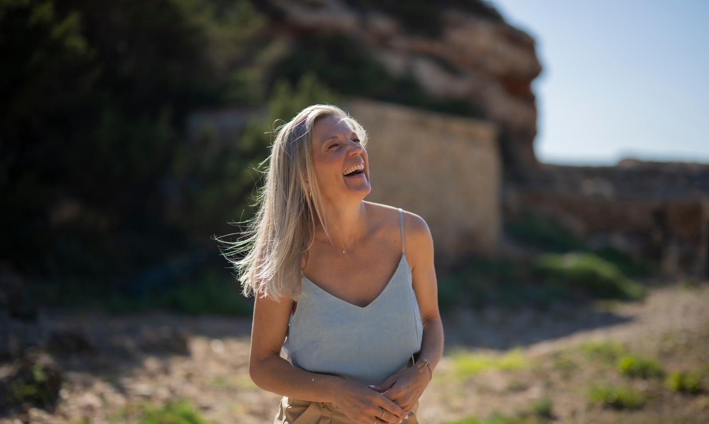
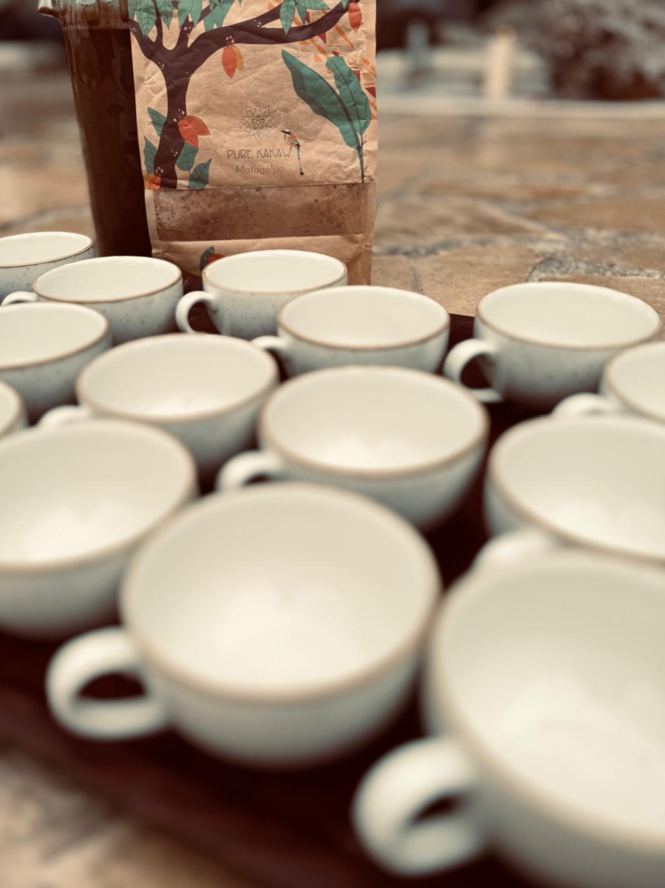
Door te vereenvoudigen ontstaat ruimte. Door ruimte ontstaat helderheid. Door helderheid ontstaat verandering.
Bij Sparkle your Life creëren we ruimte om te vertragen, te vereenvoudigen en opnieuw verbinding te maken met wat voor jou werkelijk belangrijk is, zodat persoonlijke groei, bewust leven en duurzame verandering als vanzelf kunnen ontstaan.
Omdat het leven voller en sneller is geworden dan goed voor ons is
Steeds meer mensen functioneren, presteren en dragen verantwoordelijkheid, en voelen tegelijkertijd een groeiend verlangen naar meer rust, ruimte, eenvoud en betekenis. Sparkle your Life creëert een plek om te vertragen, te vereenvoudigen en opnieuw verbinding te maken met wat werkelijk belangrijk is. Niet vanuit het idee dat er iets gerepareerd moet worden, maar vanuit het vertrouwen dat de antwoorden vaak al aanwezig zijn.
Mensen helpen om vanuit rust, ruimte en helderheid bewuste keuzes te maken die passen bij wie ze werkelijk zijn.
Duurzame verandering ontstaat niet door harder te werken of meer te doen, maar wanneer we durven vertragen, vereenvoudigen en aandacht geven aan wat werkelijk van waarde is. Rust is geen luxe, maar een noodzaak.
Een omgeving waarin rust en aandacht centraal staan
Sparkle your Life is een plek voor persoonlijke groei, bewust leven en duurzame verandering. Geen standaard trajecten. Geen snelle oplossingen. Wel een omgeving waarin rust, ruimte en aandacht centraal staan.
Niet als gewone life-coach, maar als motiverend, niet-oordelend luisterend oor en steun voor positieve verandering.
Samen creëren we helderheid in situaties die complex voelen. We brengen terug wat overbodig is, zodat zichtbaar wordt wat werkelijk belangrijk is.
Door te vertragen ontstaat ruimte. Door te vereenvoudigen ontstaat helderheid. Door helderheid ontstaat verandering.
Mijn rol is niet om je te vertellen wat je moet doen. Mijn rol is om samen met jou te onderzoeken wat voor jou klopt, zodat je keuzes kunt maken die passen bij wie je bent en hoe je wilt leven.
De antwoorden zijn vaak dichterbij dan je denkt. Soms is er alleen iemand nodig die helpt om ze zichtbaar te maken.
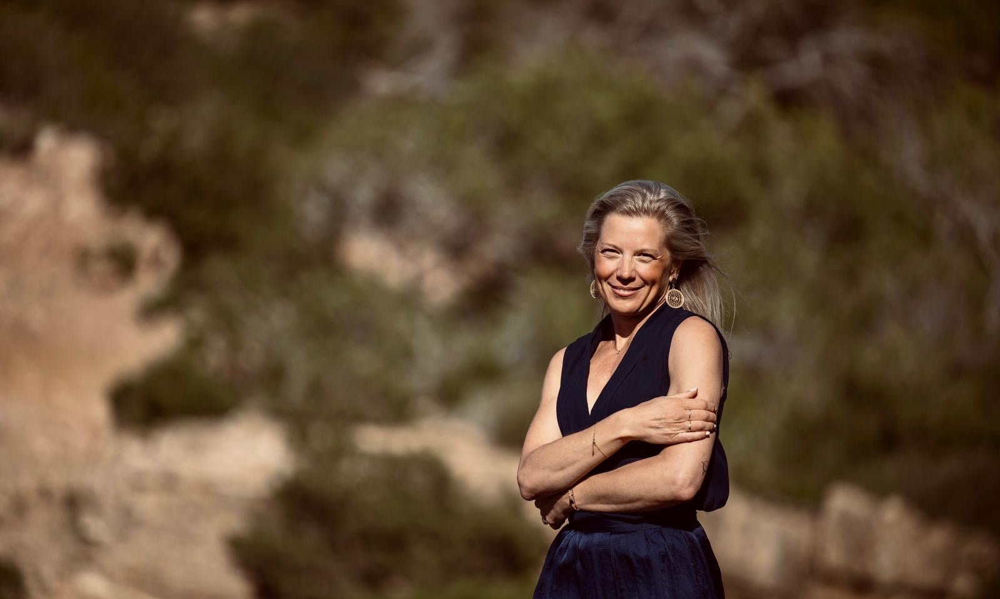
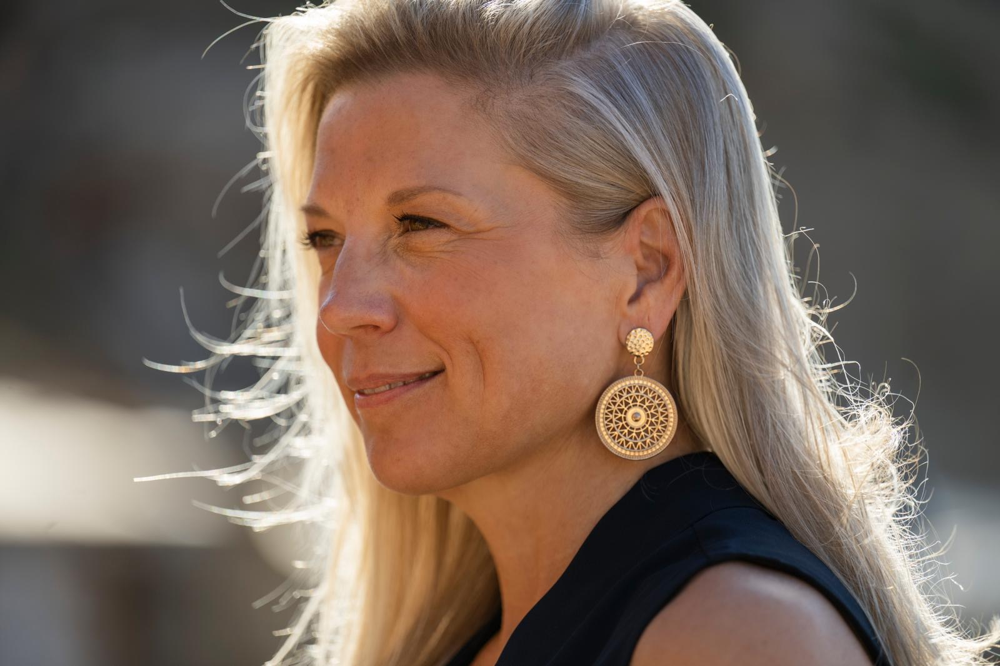
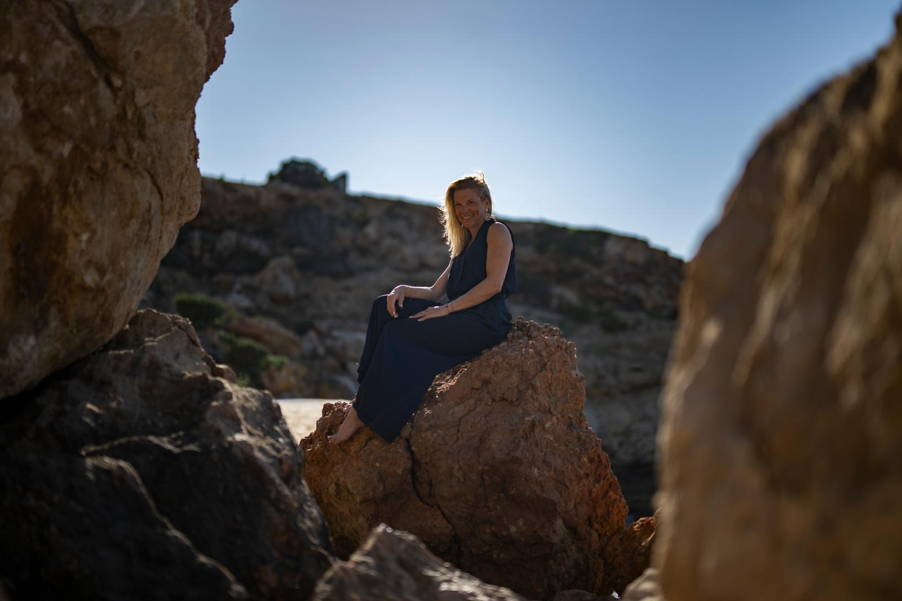
Hoi, ik ben Fanny.
Ik geloof dat veel mensen niet méér nodig hebben. Maar minder.
Minder ruis. Minder druk. Minder moeten.En juist daardoor meer rust, ruimte en helderheid.
Mijn eigen leven heeft mij geleerd hoe gemakkelijk we onderweg verwijderd kunnen raken van onszelf. Ik woonde in verschillende landen, maakte relatiebreuken en financiële uitdagingen mee, stond jarenlang alleen voor de zorg van mijn zoon, werkte hard, liep tegen mijn grenzen aan en ontdekte hoe belangrijk het is om af en toe stil te staan.
Niet om op te geven. Maar om opnieuw te kiezen.Die ervaringen hebben mij gevormd tot wie ik vandaag ben. Nuchter. Open. Oordeelloos. En altijd op zoek naar wat werkelijk van waarde is.
Ik geloof niet in perfectie. Ik geloof in bewust leven. In ruimte maken voor wat belangrijk is. En in het vertrouwen dat verandering mogelijk wordt zodra er helderheid ontstaat.
Vandaag begeleid ik mensen die voelen dat het anders mag. Niet omdat er iets mis is. Maar omdat ze verlangen naar meer rust, meer eenvoud en meer verbinding met zichzelf.
Mijn aanpak is nuchter, direct en warm. Ik creëer een veilige ruimte waarin je jezelf kunt zijn, zonder oordeel. Ben je er klaar voor? Ik sta naast je.
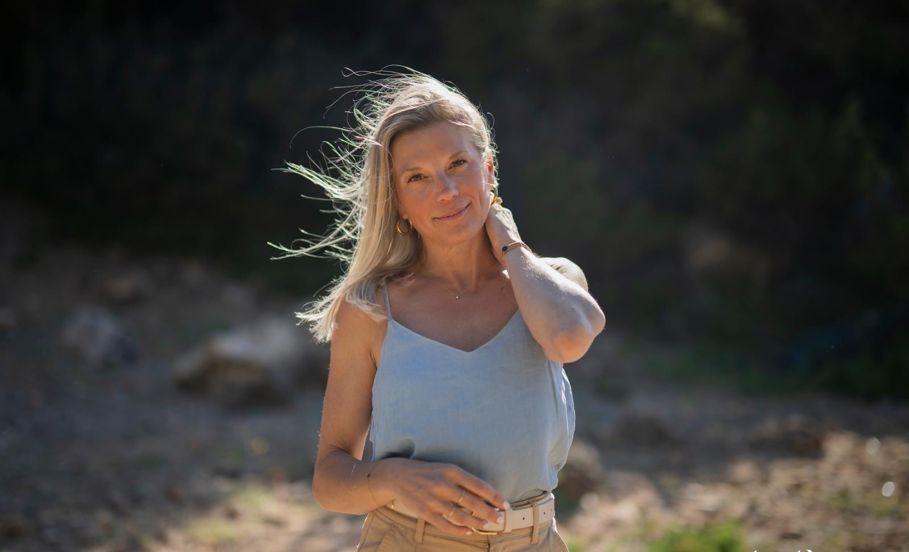
Begeleiding voor wie voelt dat het tijd is voor verandering
Als vereenvoudiger en balansdeskundige begeleid ik mensen die voelen dat het tijd is voor verandering.
Mensen die veel verantwoordelijkheid dragen, veel geven aan anderen en tegelijkertijd merken dat er behoefte ontstaat aan meer rust, ruimte en richting. Soms speelt er een concrete uitdaging. Soms is er alleen een gevoel dat het huidige leven niet meer helemaal past.
Samen onderzoeken we wat aandacht vraagt. We brengen overzicht waar chaos is ontstaan, helderheid waar twijfel overheerst en vereenvoudiging waar het leven onnodig ingewikkeld is geworden.
Mijn aanpak combineert praktische begeleiding met intuïtieve inzichten. Altijd afgestemd op jou als mens.
Niet op een standaard methode. Niet op een vast stappenplan. Maar op wat jij op dit moment nodig hebt.
Vijf dingen die centraal staan
Rust en ruimte
We vertragen bewust om weer overzicht te krijgen. Niet door meer te doen, maar door anders te kijken.
Vereenvoudiging
Samen brengen we terug wat werkelijk belangrijk is. Zodat keuzes makkelijker worden en energie weer kan stromen naar wat er toe doet.
Helderheid
Wanneer de ruis afneemt, ontstaat ruimte om heldere keuzes te maken. Voor jezelf. Voor je werk. Voor je relaties. Voor je toekomst.
Persoonlijke begeleiding
Geen standaard traject. Geen vaste route. Wel aandacht, betrokkenheid en begeleiding die aansluit bij jouw situatie.
Duurzame verandering
Niet gericht op snelle resultaten. Maar op verandering die ook over een jaar nog klopt.
Welke verschuiving we samen maken
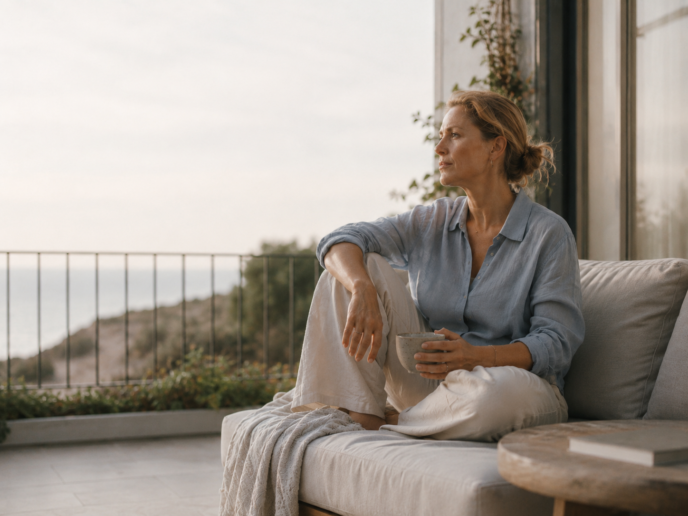
Je voelt dat er iets mag veranderen
Misschien kun je precies benoemen wat. Misschien ook niet. Maar ergens weet je dat het tijd is om stil te staan bij hoe je leeft, werkt en keuzes maakt.
Je bent iemand die verantwoordelijkheid neemt. Die veel kan dragen. Die vaak doorgaat. Voor anderen, voor het werk, voor het gezin. Maar ondertussen groeit het verlangen naar meer rust. Meer ruimte. Meer eenvoud. Meer helderheid.
Misschien voel je je regelmatig overprikkeld. Misschien ben je het overzicht kwijtgeraakt. Misschien vraag je je af: Is dit het nou? Je bent succesvol in wat je doet, maar ergens ben jijzelf op de achtergrond verdwenen. Je blijft vastzitten in dezelfde patronen. En je wilt die cyclus doorbreken.
Wat jouw situatie ook is: je bent bereid om eerlijk te kijken naar wat niet meer werkt, je staat open voor verandering en je verlangt naar een leven dat meer in lijn is met wie je werkelijk bent.
Dan ben je hier op de juiste plek.
Wat anderen zeggen
Ik liep al jaren met hetzelfde gevoel rond zonder te weten hoe ik het moest aanpakken. Na een paar sessies had ik eindelijk woorden voor wat er speelde. Van daaruit kon ik pas echt bewegen.
Ik was sceptisch over coaching, maar de aanpak is anders. Geen zweverigheid, gewoon eerlijk en direct. Ze stelt vragen waar je niet omheen kunt.
Ik dacht dat ik een burnout had. Het bleek dat ik gewoon al heel lang niet meer bij mezelf was. Fanny hielp me dat zichtbaar te maken, zonder oordeel.
Manieren om samen te werken
Verschillende vormen, dezelfde rode draad: rust, ruimte en helderheid, afgestemd op waar jij nu staat.
1-op-1 begeleiding
Persoonlijke begeleiding voor wie verlangt naar meer rust, helderheid en richting.
Meer →Biotensor sessies
Een aanvullende methode om inzicht te krijgen in wat aandacht vraagt en waar meer balans mag ontstaan. Beschikbaar op locatie en op afstand.
Meer →Choco Bliss Reizen
Vertragen, verdiepen en verbinden. Beschikbaar voor individuen, koppels en groepen.
Meer →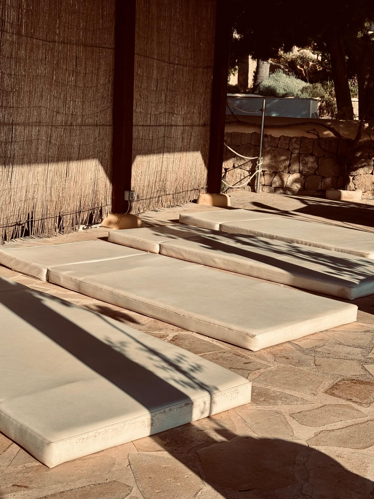
Cirkels & Ceremonies
Ruimte voor ontmoeting, reflectie en persoonlijke groei. Voor vrouwen, mannen en gemengde groepen.
Meer →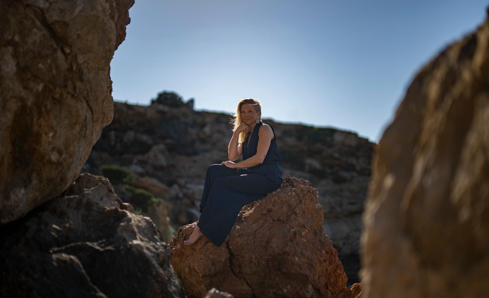
Retreats
Tijd en ruimte om afstand te nemen van de dagelijkse drukte en opnieuw verbinding te maken met wat werkelijk belangrijk is.
Meer →Tijd om te landen en te voelen
Op rustige plekken aan zee maken we ruimte om te vertragen. Eenvoud, natuurlijke materialen en de stilte van de natuur.
Voel je dat het tijd is
voor meer ruimte?
Plan een kennismaking en ontdek of Sparkle your Life past bij waar jij nu staat. Geen verplichtingen, geen verkooppraatje.